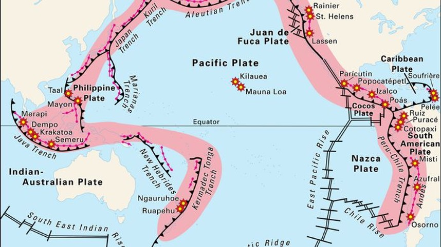
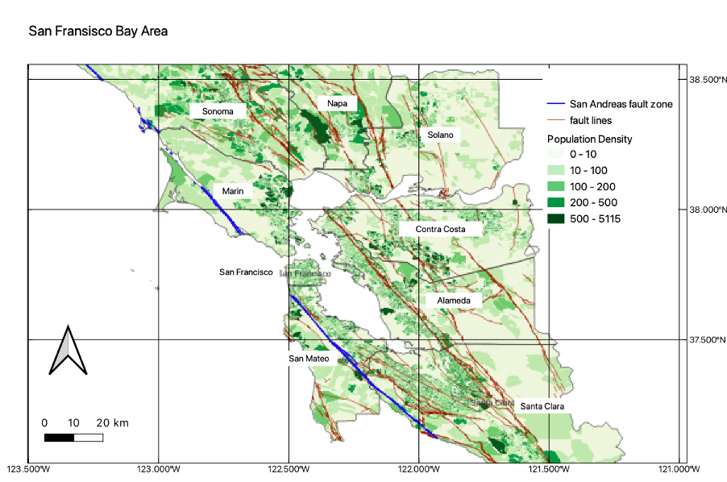
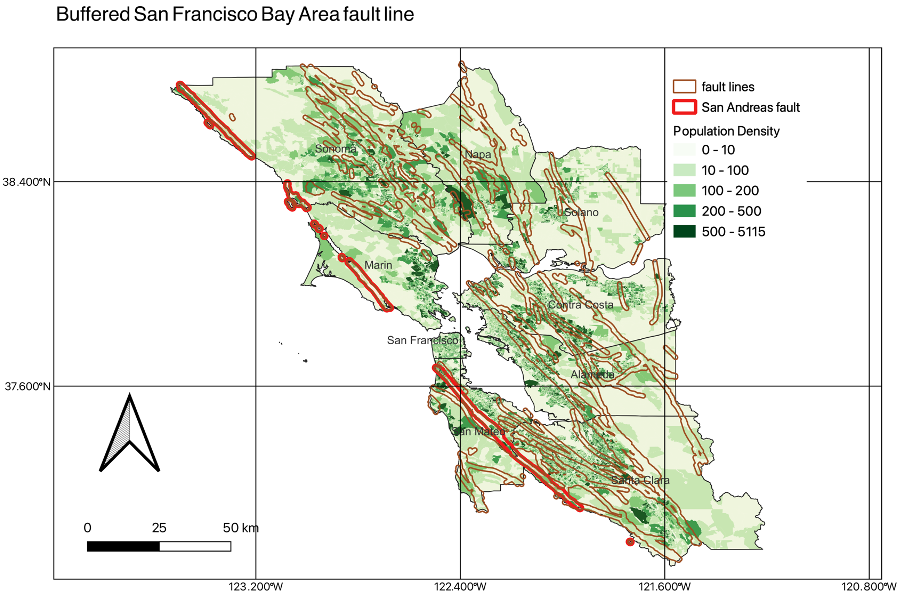
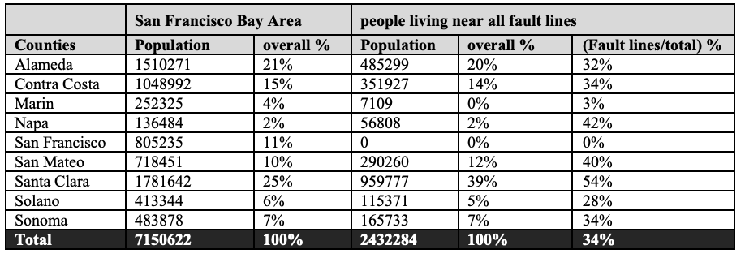
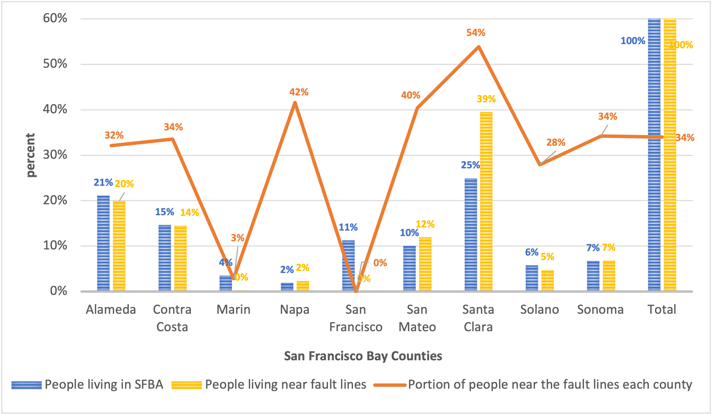
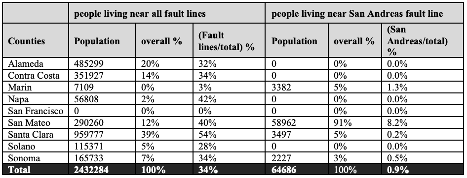
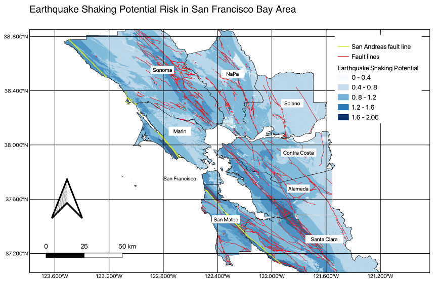
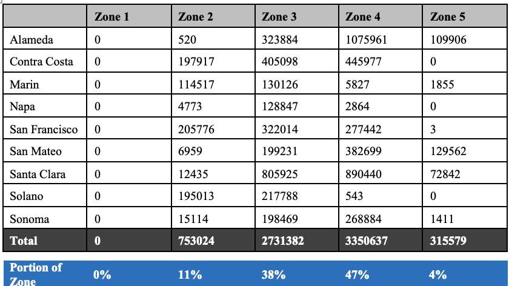
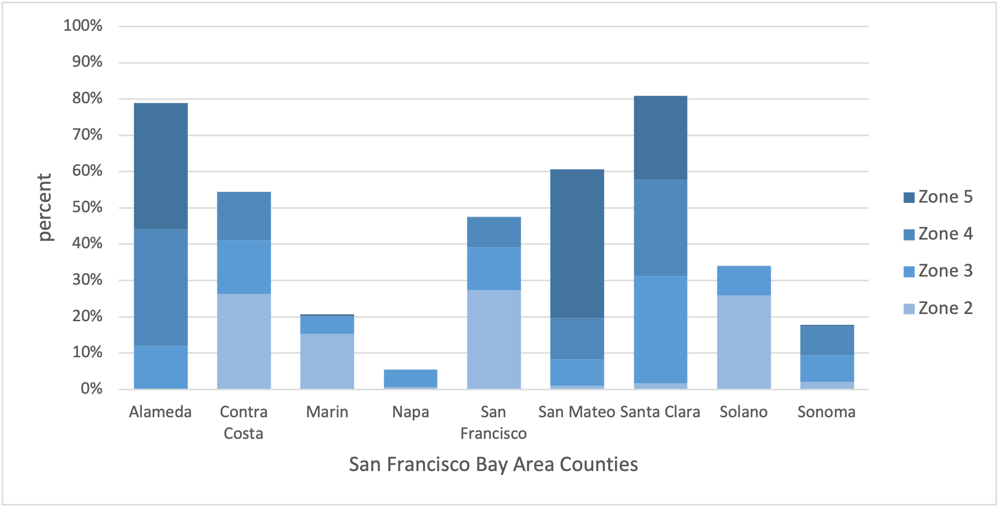

Earthquake Hazard of San Francisco Bay Area
![]()
Abstract
California located the most active faults on the Ring of Fire. San Andreas fault line, the strongest line near the Ring of Fire, penetrating the California area, stretches along the central west coast of North America. My hypothesis model is based on the measure of the population near the fault lines in San Francisco Bay Area. I assume that near the fault lines have a high potential risk of earthquake. Comparing the actual model, which was published by California Geological Survey, contains the actual geological data and geographic features. The population of my hypothesis model is 1.5 times less than the actual model. Moreover, my hypothesis model shows no passing through any fault line in San Francisco city, but the actual model defines San Francisco city has a potential risk from earthquakes, which means there are no safe places in San Francisco Bay Area.
Introduction
California generally has two- or three-times strong earthquakes enough to cause moderate damage each year. California is located especially near the Ring of Fire. In history, the recent rapture that happened in 1906, caused the great California earthquake. Despite a quick response from San Francisco’s large military population, the city was devasted. The earthquake killed 3,000 people and created 400,000 residents homeless. (National Archives)
This major event happened in San Andreas. San Andreas fault lines pass through the middle of California, which primary plate boundary structure in California and present a large earthquake region. Meanwhile, the San Andreas fault is located in the space where the North American and the Pacific plate meet. (David K. Lynch, 2006) The San Andreas fault is the primary plate boundary fault in southern California, and it produces the most major earthquakes. Therefore, this study is mainly focused on people have affected by earthquake in San Francisco Bay Area. This report also investigates people living near the San Andreas fault lines.
This study is mainly focused on people have affected by earthquake in San Francisco Bay Area. My hypothesis model is assuming people near the fault lines having affect the earthquake shaking. The actual model derived the data from USGS, and it includes the actual geological information. Ultimately, my hypothesis model and actual model compare the population affected by the earthquake.
Methods

Figure 1: Ring of Fire. The ring of active volcanoes and earthquakes frames the Pacific Ocean- about 90% of the world’s earthquakes occur here. California is also closely located in this Ring of Fire.
California is the most vulnerable State to an earthquake in the United States. Figure 1 shows that the Ring of Fire is closely located in the California region. This active belt of earthquake epicenters, volcanoes and tectonic plate boundaries fringe the Pacific basin. Most of the world’s largest earthquakes occur in the Ring of Fire, and 90 % of earthquake happens in this area. (USGS, 2012) Most of the strongest Seismic fault lines are located in California, close to the Ring of Fire. Among the fault lines in California, San Andreas occupies the most energy and rupture in large earthquakes. (Hardy, 2020)

Figure 2: Seismic Fault lines and Population density in San Francisco Bay Area. 81 different Seismic fault lines of San Francisco Bay Area.
Fault lines intertwined all of the San Francisco Bay areas. Regardless of the fault lines, the population density shows a quite higher level near the fault lines. Most fault lines, which indicate brown lines, pass over all of the San Francisco Bay areas, except the city of San Francisco. Fault lines intertwine in Santa Clara with high density. The San Andreas, the blue lines, pass through Marin, San Mateo, and Santa Clara counties.
This study mainly focused on those people living near all fault lines and compare the people living near the fault lines. San Francisco Bay Area is the second-highest population in the United States. (San Francisco Chronicle, 2021) Due to the high population, a large portion of people suffers earthquake near the fault lines, especially San Francisco Bay Area. This area contains 9 different counties, which are San Francisco, Sonoma, Napa, Marin, Solano, Contra Costa, San Mateo, Alameda, and Santa Clara. In Figure 2, it shows the clear the 9 different counties with 81 fault lines.
The dataset consists of the United States Geological Survey (USGS) for fault lines, and this dataset includes the 539 different fault lines in California and among those, the 81 fault lines in San Francisco Bay Area. The actual model of earthquake shaking potential risk data brought Dr. Branum’s 2015 model from USGS, and Dr. Branum organized to develop this model under California Geological Survey and United State Geological Survey.
The recent census data is the most difficult to find because recent one shows the counties based, not the small towns. That form of data structure was not proper to use my hypothesis model. Helping from Kaitlyn Bretz, who is TA in this course, she tried to find proper dataset, but eventually the population data used from the 2010 census in this research.
Particularly, this report used the QGIS program, which helps to define the project map coordinate reference system (CRS). For features from Seismic default lines, the clip tool helps to extract the San Francisco Bay regions only. To figure out the population near the default lines, the buffer tool creates boundaries near the fault lines. The boundaries cover through a point buffer. However, the point buffers overlap similar regions, so it is hard to figure out the population by single buffered region. The dissolve tool eliminates the overlapping regions of the point buffer and defines the near default line area. The Join attribute function by location, finally, helps to find the population within the buffered regions. This tool provides the data on the specific population which is vulnerable to earthquakes.
Earthquake Shaking potential data particularly takes a lot of work to modify the data. This is the actual model for measured earthquake shaking potential by including geological and geographic features information. First, Earthquake shaking potential data doesn’t define the zone area. I divided the five different zones by 1.0-second spectral acceleration (SA10) and scaled 0.4 ranges each. The earthquake shaking potential data was not matched with the geometric way. This data used the fix geometries tool to match with the population data. Afterward, using the by join attributed function by location, the number of people living in each zone can be figured out.
Results
Overall population living near seismic fault lines

Figure 3: Buffered the fault lines in San Francisco Bay Area
Table 1: Population of the San Francisco Bay Area and living near the fault lines

According to Figure 2, Santa Clara has the highest population in all of the regions. In Table 1, people live in Santa Clara, which is 25% of all Bay areas, and 39% of the population lives near the fault lines. 54% of people live near the fault lines in Santa Clara.

Figure 4: Graph of Population of San Francisco Bay Area(SFBA) and living near the fault lines
Figure 4 shows clearer the population of each county. The blue bar represents the people living in each county in San Francisco Bay area and the yellow bar shows the people living near fault lines. Santa Clara shows a high population ratio, a quarter of the total San Francisco Bay Area, and 39 % people in Santa Clara lives near the fault lines. Orange line defines the portion of people near the fault lines each county. The most earthquake affected county is Santa Clara. 54% of people suffered earthquake shaking in this area. The second most earthquake affected area is Napa. Napa is the least people living in Bay Area, but large amount of people lives near the fault lines. Overall, the 34% of people in SFBA live near the fault lines.
Table 2: Population of living near all fault lines, and San Andreas fault line

The major impact of the potential earthquake comes from San Andreas fault lines. The article discussed the San Andreas rupture along and the strong possibility of joint rupture in the future. (Julian C. Lozos, 2016) In Figure 2, San Andreas pass through Marin, San Mateo and Santa Clara counties. However, Table 2 shows that 91% people in San Mateo live near the San Andreas fault lines.
The Actual Model of Earthquake Shaking Potential Risk

Figure 6: Earthquake Shaking Potential in San Francisco Bay Area from NSHM
The National Seismic Hazard Maps (NSHM) published the danger of earthquake shaking to see potential risks to avoid people living or working in this area getting hurt. The earthquake slightly moved and new models provide to more accurately define the earthquake shaking regions. In Figure 6, the California Geological Survey (CGS) published the map of “Earthquake Shaking Potential for California” which defines the level of earthquake hazard.
According to D. Branum’s 2015 thesis paper, this actual model extracts from the actual amplified seismic shaking movement. This model explains the potential risk of an earthquake based on the actual ground data. This potential risk is based on the 1.0-second spectral acceleration (SA10), which is expressed as a fraction of gravity. This unit normally used geology and topography that the maximum acceleration in an earthquake on objected special damped.
Based on the data, earthquake shaking potential is divided into 5 different zones in Table 1. The potential index divides by 0.4 points. Zone 1 is 0 to 0.4, Zone 2 is 0.4 to 0.8, Zone 3 is 0.8 to 1.2, Zone 4 is 1.2 to 1.6, and Zone 5 is over 1.6. If the potential index number is high, the potential risk of an earthquake is high.
Table 3: population based on the earthquake shaking zone

Table 3 shows that Zone 3 and Zone 4 are the major earthquake shaking impact on San Francisco Bay Area. No county includes Zone 1, so it means that there are no safe places in San Francisco Bay Area.

Figure 7: Risk of Potential Earthquake shaking of each zone
The bar graph clearly shows each percentage zone of each county. In Figure 7, Alameda and San Mateo shows high portion of Zone 4 and 5. San Mateo is second highest population in San Francisco Bay Area, but high portion of area covers Zone 4 and 5. Therefore, Alameda has the highest risk comparing to the other counties. Additionally, the fault lines don’t pass through San Francisco city, the aftershock and foreshock reach to the city quite high level.
Discussion I expected that my hypothesis model defines population near the fault lines data is aligned with the actual model. Near the fault lines expected high potential risk of earthquake and the number of buffered populations is 1.5 times less than combined population in zone 4 and 5 in the actual model.
If you compare Figure 2 and Figure 6, is easily recognized the San Andreas fault line at once. In Figure 6, the darkest blue color defines the high potential earthquake shaking risk and it seems to align with the San Andreas fault line. This means the San Andreas has a lot of possible to break the earthquake shaking as we know already.
There are some limitations to address the result. First, my census data wasn’t recent data, so the overall population data wasn’t accurate comparing to the present day. Second, my hypothesis model assumes that near the fault line has a high risk of earthquake. However, each fault line has different potential energy or stress level. (Noda,2009) My hypothesis model wasn’t applied to actual movement of earthquake shaking, so data couldn’t show the risk of earthquake.
Conclusion
Earthquake shaking carries different kind of potential risk such as landslide, tsunami, and mineral hazard. Mostly, it is major causes of landslides. Landslides happened when rocks or earth material or debris fall down a slope. Landslides occurs anywhere if the condition is proper, and this is reason to damage properties and causalities to people. (Nature) To prevent such damage, it would be necessary to consider such damages into the potential earthquake shaking risk. It would be helped to define more accurate population affected from earthquake shaking.
Reference
National Archives, San Francisco Earthquake (1906), https://www.archives.gov/legislative/features/sf USGS,
Ring of Fire (2012)
David K. Lynch (2006)
Field guide to the San Andreas Fault Julian C. Lozos (2016)
A case for historic joint rupture of the San Andreas and San Jacinto. faults, Stanford University,https://www.science.org/doi/10.1126/sciadv.1500621 Sandra Hardy (2020)
Geophysical Investigations of The San Andreas Fault System And Evaluations In Geoscience Education, University of Texas at El Paso San Francisco Chronicle (2021),
San Francisco may be small, but it’s among America’s most densely populated cities https://www.sfchronicle.com/sf/article/San-Francisco-may-be- small-but-it-s-among-16650575.php
Hiroyuki Noda, Eric M. Dunham, and James R. Rice(2009), Earthquake ruptures with thermal weakening and the operation of major faults at low overall stress levels, Journal of Geophysical Research, https://citeseerx.ist.psu.edu/viewdoc/download?doi=10.1.1.161.4262&rep=rep1&type=pdf
D. Branum, R. Chen, M. Petersen and C. Wills, (2016),Earthquake Shaking Potential For California Nature, https://www.nature.com/scitable/topicpage/lesson-8-landslides-hazards-8704578/#:~:text=Earthquakes%20are%20a%20major%20cause,casualties%20to%20people%20and%20property.